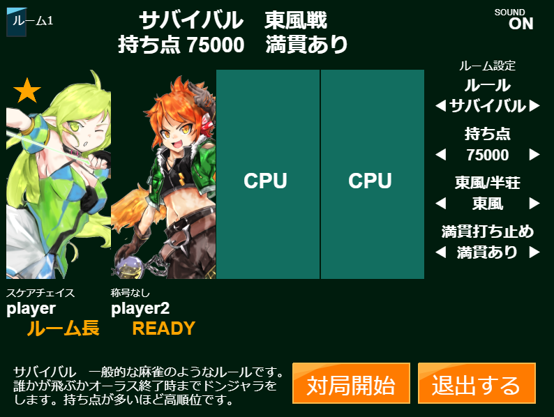

【エルドンオンライン/for this game】
はじめに
エルソードに登場するキャラクターがパイになったドンジャラ風のボードゲームです。
自動的にロードを行います。
BGM,SEが鳴ります。
外部セーブ機能付き。対戦記録をダウンロードしておくと、次回以降読み込めます。
ルーム対戦機能あり。最大4人で対戦ができます。
概要
9枚のパイで以下の「役」と呼ばれる組み合わせを揃えるゲームです。
①3ペア：同じキャラ（エルス、アイシャなど）を3枚1組として、3組（3キャラ）を揃える。
②ライン通貫：職ライン（1,2,3）が同じパイを9枚揃える。
③国士無双：特定のパイ14種のうち、9種類を揃える。
モード説明
「フリーバトル」 1人プレイ／自分とCPU3人でエルドン。スキル使用可。
「たいせん」 1~4人プレイ／対戦ルームで他のプレイヤーとエルドン。スキル使用不可。
Tips
あと1枚で揃うと思ったら、リーチしましょう。
オールマイティのパイは何にでも代用可能です。
ツモ・ロンした時、さらにシナジー役やクレスト役が追加でつき、得点が上がります。
ゲーム内プレイガイドにも遊び方を記載しています。
【操作/how to play】
基本的にマウス操作で遊べます。
対局中の操作（基本）
「パイを切る」 手札のパイをクリック。
「リーチ」 リーチボタンをクリックしてからパイを選択。
「ポン」 ポンボタンをクリック。ポンしない場合はボタン以外の場所をクリック。
「ツモ/ロン」 ツモ・ロンボタンをクリック。和了しない場合はボタン以外の場所をクリック。
対局中の操作（応用）
「スキル」 （フリーバトルのみ）スキルボタンをクリック。その後、対象を選択。
「マナブレイク」 MPゲージが1目盛以上緑色になるまで長押し後、パイを切る。詳細はゲーム内プレイガイドを参照してください。
「SORT」 手札のパイをキャラ順⇔職ライン順で並べ替えます。
「残パイリスト」 クリックするとまだ場に出ていないパイを表示します。
「シナジー」 クリックするとシナジー役一覧/所持パイで可能なシナジー役を表示します。
その他の操作
「プロフィール変更」 プロフィール枠か虫眼鏡をクリックした先の画面で変更可能。ユーザー名は半角12文字以内。
「セーブ」 プレイデータをjson形式でダウンロードします。
「ロード」 画面外下部「ファイルを選択」ボタンからセーブデータをアップロード。
※ロードは必ずメインメニュー画面状態で行ってください。
【困った時は】
ロードが進まない！ しばらく待ってもロードが進まない場合はページをリロードしてみてください。（はじめてのロードはとても時間がかかるみたいです……）
音がデカすぎんだろ……。 オプションから音量を変更できます。また、画面右上の「SOUND」をクリックするといつでも音をミュート/解除できます。
対局が止まった！ ゲーム中に
Escキーを押すといつでもゲームを終了できます。（※対戦中はルーム長のみ権限あり）
CPUが強すぎる！ つづける がんばる
【対戦モードマニュアル】
「たいせん」モードの説明です。
▼ クリックで展開 ▼
ルーム画面
「たいせん」をクリック後、ルーム1～ルーム3をクリックすると、
以下のような画面に移ります。（ルーム長の画面）

ルーム長
そのルームのホストです。いちばん最初に部屋を立てた人です。ルーム長が退室した場合、ルーム内の他の誰かがルーム長になります。
ルーム設定
持ち点や対局の長さなどのルール設定です。ルーム長のみ設定を変更できます。
対局開始（ルーム長以外のプレイヤーでは代わりにREADYボタンが表示）
ルーム長：ルーム内のすべてのプレイヤーがREADY状態の場合にクリックすると、先に進めます。
ルーム長以外のプレイヤー：READYボタンを押すとREADY状態となります。READY状態では退室ができません。
CPU
ルーム内のプレイヤー人数が4人未満の場合、ランダムにCPUキャラが参加します。
CPUの対局設定は、ルーム長のデータのオプション設定が反映されます。
【出典/Credit】
・原作 ELSWORD
・画像 原作より。
ただしキャラクター「名無しさん」のみ全く関係ありません。
・音楽 ロードに時間がかかってしまうためビットレートを下げてお送りしています。
●以下のbgmは原作の曲を元にした耳コピ・アレンジ打ち込みです。
「夜の迷宮の入り口」「決闘のテーマ」「エルの樹の麓」「リーチっぽい音楽」「狂乱のオーラス」「終局」
●以下のbgmは「フリーBGM DOVA-SYNDROME」からお借りしました。
「盲目のアストライア」「The Evil Sacrifice Archenemies」「Nine Jack」「ロベリア」「STARDUST_LEMON」
・効果音 「効果音ラボ」からお借りしました。
・テストプレイ協力 インターネット老人会のみなさま
【更新情報/Update】
・fc2体験版公開(2022/08/12)
・v0.91公開 (2023/03/12)
・v0.92公開 (2023/03/14)
・v0.93公開 (2023/03/17)
・v0.94公開 (2023/03/21)
・v0.95公開 (2023/12/31)
【不具合・バグ情報/Patch Notes】
▼ クリックで展開 ▼
＜発生中・検証中＞
・（対戦）プレイヤーがポンできる状況でポンしなかった時、対局が止まることがある（検証中）
・（対戦）終局後、勝手に退室させられる場合がある（検証中）
・（対戦）特定の状況でルーム内に自分が2人存在する場合がある（検証中）
・（フリバ）魔界血戦で得点が割り切れない数字になる（検証中）
＜解決済み＞
v0.91
・（追加）bgmを1曲追加
・（表示の不具合）終局画面で各プレイヤーとキャラクター画像が対応していない問題を修正
・（対戦）対戦途中でもルーム長の操作でESCキーで抜けられるよう修正
・（対戦）SOUNDをミュートにしていても対局終了後のbgmが流れる問題を修正
・（フリバ）バフ・デバフ欄で「火傷」デバフが「咆仙経」と表示される問題を修正
v0.92
・（追加）プレイガイドにクレスト役に関する説明を追記
・（追加）対戦モードにFEVER機能を追加
・（追加）オプションにCPUポンの頻度・MPチャージ速度・FEVERを追加
・（ロード）ロードに非常に時間が掛かってしまうためbgmの容量削減
・（表示の不具合）シナジー「探求する者」にエーテルセージが表示されていない問題を修正
・（表示の不具合）フリーバトル中にマナブレイク演出が出ない問題を修正
・（フリバ/対戦）終局で順位が同立だった場合の処理を修正
・（フリバ）CPUの「フレイムガイザー」時、対局が止まる問題を修正済
・（フリバ）プレイヤーの「メモライズ」使用後、自動的にパイが切られない問題を修正
v0.93
・（フリバ）「メモライズ」したパイを次局以降に持ち越せる仕様に
・（対戦）対戦モードの戦績が勝率に反映されない問題を修正
・（表示の不具合）FEVERなしの際にFEVERゲージの表示がおかしい問題を修正
v0.94
・（追加）得点計算式を改変
・（追加）右クリックでツモ切りできる機能を追加
・（追加）「魔界血戦」モードを追加
・（セーブ＆ロード）メニュー画面以外の場所でセーブデータをロードした際の挙動を修正
・（表示の不具合）抜きボタン連打で抜きアニメーションが複数回流れる問題を修正
v0.95
・（追加）アガリ画面の演出を改変
・（追加）レイヴン、イヴを追加
・（表示の不具合）右クリックでツモ切りした際に連続リーチできてしまう問題を修正